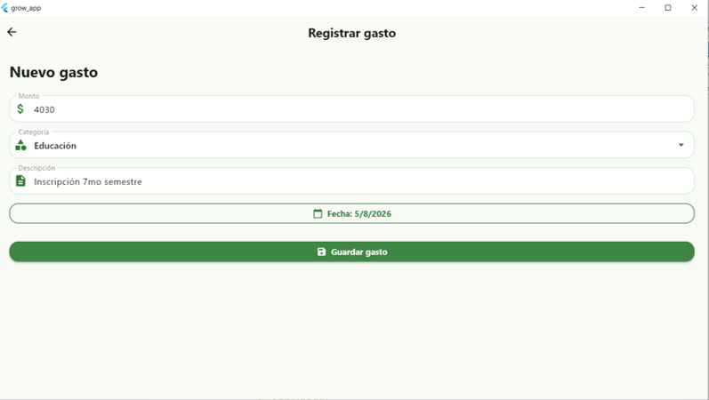
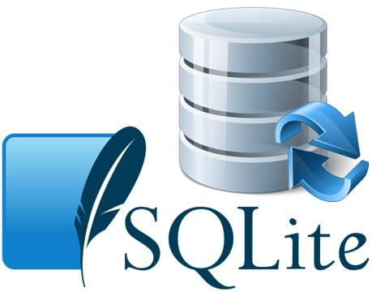
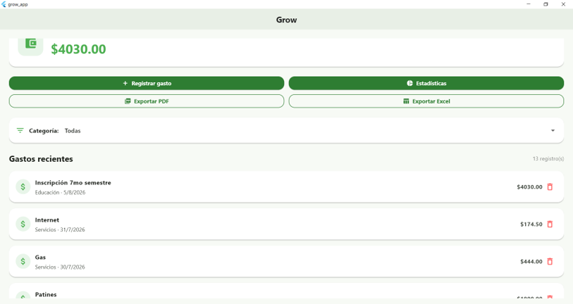
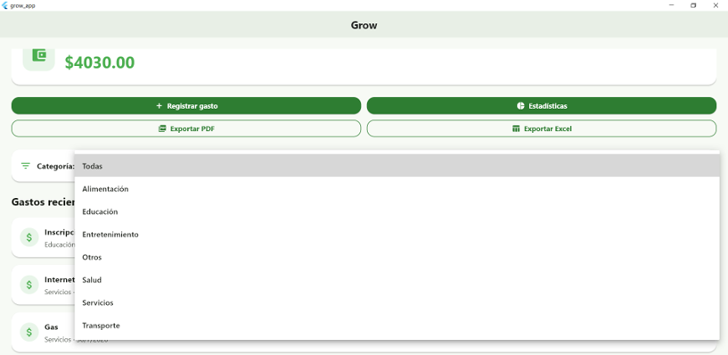
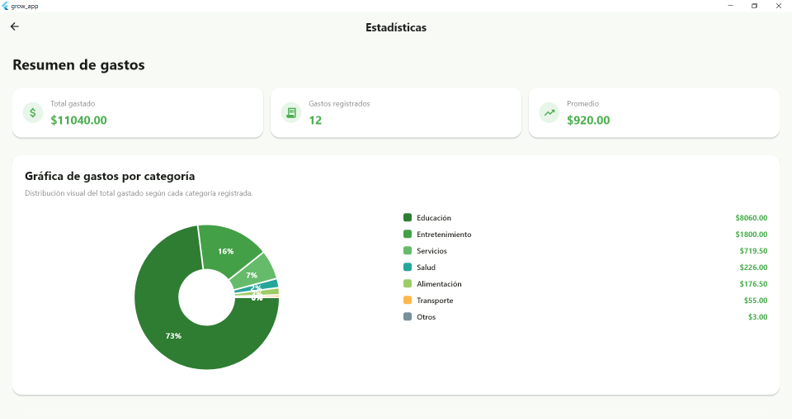
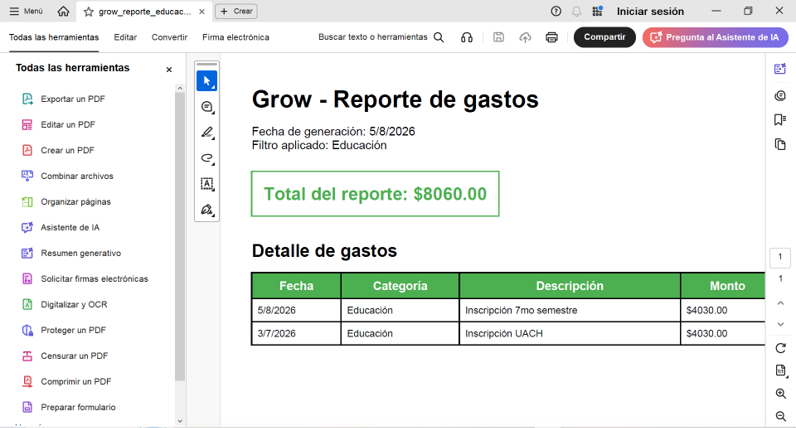

Descripción del proyecto
Grow es una aplicación de escritorio diseñada para apoyar la administración de gastos personales. Su propósito principal es permitir que el usuario registre sus gastos diarios, los organice por categoría y consulte información relevante sobre su comportamiento financiero.
La aplicación fue desarrollada como parte de un proyecto académico de software, integrando herramientas de desarrollo, almacenamiento local, reportes y control de versiones.
Objetivo general
Desarrollar una aplicación de escritorio que permita al usuario llevar un control básico de sus gastos personales mediante el registro, almacenamiento, consulta, filtrado, análisis y exportación de información financiera.
Funcionalidades principales

Registro de gastos
Permite registrar monto, categoría, descripción y fecha de cada gasto. Esta función facilita la captura de la información que posteriormente será almacenada y consultada dentro de la aplicación.

Almacenamiento local
Los gastos se guardan en una base de datos local SQLite, lo que permite conservar la información registrada directamente en el equipo del usuario.

Lista de gastos
Muestra los gastos registrados en la pantalla principal de la aplicación. Cada registro presenta información como monto, categoría, descripción y fecha.

Filtros por categoría
Permite visualizar únicamente los gastos de una categoría específica, facilitando la consulta y el análisis de la información registrada.

Estadísticas
Presenta información general como total gastado, número de registros, promedio y gastos por categoría mediante una representación gráfica.

Exportación de reportes
Permite generar reportes en formato PDF y Excel para consultar, respaldar o presentar la información de los gastos registrados.
Herramientas utilizadas
| Herramienta | Uso en el proyecto |
|---|---|
| Flutter Desktop | Desarrollo de la interfaz y lógica principal de la aplicación. |
| Dart | Lenguaje de programación utilizado para desarrollar Grow. |
| SQLite | Base de datos local para almacenar los gastos registrados. |
| Visual Studio Code | Editor de código utilizado durante el desarrollo. |
| Git | Control de versiones local del proyecto. |
| GitHub | Repositorio remoto para respaldar y publicar el proyecto. |
| GitHub Pages | Publicación gratuita del sitio web de documentación. |
Manual básico de uso
- Abrir la aplicación Grow en Windows.
- Presionar el botón Registrar gasto.
- Ingresar el monto, categoría, descripción y fecha del gasto.
- Guardar el gasto.
- Consultar la lista de gastos recientes en la pantalla principal.
- Usar el filtro de categoría para visualizar gastos específicos.
- Entrar a la sección de estadísticas para revisar los totales.
- Exportar reportes en PDF o Excel cuando sea necesario.
Estructura del proyecto
grow_app
├── lib
│ ├── data
│ ├── models
│ ├── screens
│ ├── services
│ └── widgets
├── test
├── windows
├── pubspec.yaml
└── docsEstado actual del proyecto
Documento técnico
En esta sección se encuentra disponible el documento técnico completo de la aplicación Grow. Este documento describe el desarrollo del sistema, sus requisitos, arquitectura, procesos, interfaces, componentes de software, pruebas, gestión de riesgos, control de versiones, manual de uso y conclusiones del proyecto.
El archivo puede consultarse directamente en el navegador o descargarse para su revisión.
Conclusión
Grow representa una solución sencilla y funcional para la gestión de gastos personales. El proyecto permitió aplicar conceptos importantes de desarrollo de software, como diseño de interfaz, manejo de datos, almacenamiento local, generación de reportes y control de versiones.
Además, la publicación de esta documentación mediante GitHub Pages facilita la presentación del proyecto y permite consultar sus características principales desde un sitio web público.